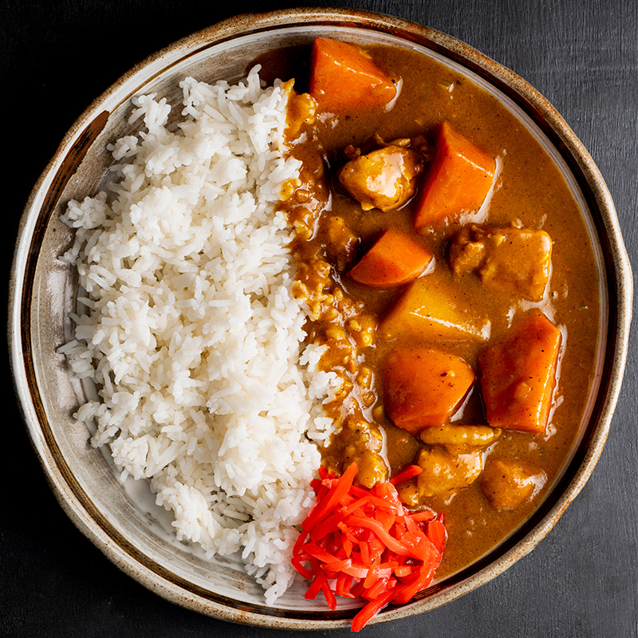

Japanese Curry

Description
A simple and poignant dish which will keep you coming back.
This Japanese-style curry is a healthy choice for people of all ages
Ingredients
- 1 pound skinless bonless chicken thighs
- 1 tablespoon olie oil
- 1 pinch salt and ground black pepper
- 5 1/3 cups water, divided
- 1 package S&B Golden Curry blocks
- 1 can peas, drained
- 5 potatoes, halved and skinned
- 1 package sliced cremini mushrooms
- 2 medium carrots, chopped
- 1 medium onion, chopped
- 2 cups jasmine rice
Steps
- Cook chicken in large skillet after seasoning
- After 3-4 minutes each side of chicken, add vegetables
- Add water and bring to a boil, once at a boil, turn heat to low for simmer
- Let simmer 15 minutes, then turn heat off
- Add curry blocks and stir thoroughly for 2-3 minutes
- Serve on a bed of jasmine rice once consistency is to your liking.